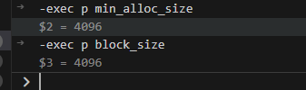

BlueStore写入流程源码分析
一、准备工作
1、配置ceph.conf，防止osd_op_thread线程超时suicide
在ceph.conf文件的OSD组中添加字段osd_op_thread_suicide_timeout = 1800来调整osd_op_thread的自杀时间（单位秒），避免时间过短导致osd_op_thread影响调试
1 | //file:ceph.conf |
2、创建pool
1 | cd ./build |

3、ceph之bufferlist

二、写入流程堆栈
通过如下命令向mypool写入对象my_first_object
1 | touch ./myoutput/hello_ceph.txt |
tp_osd_tp线程堆栈如下所示
1 | #0 BlueStore::queue_transactions (this=0x555558a95e00, ch=..., tls=std::vector of length 1, capacity 1 = {...}, op=..., handle=0x0) at /home/rebellion/clone/ceph/src/os/bluestore/BlueStore.cc:15665 |
OSD收到rados的写入请求后通过BlueStore::queue_transactions进行对象的写入。
该写入请求{“my_first_object”:”Hello Ceph Pool”}如下图所示的操作：


三、BlueStore::queue_transactions源码分析
BlueStore统一通过BlueStore::queue_transactions进行事务处理，写事务的处理流程如下所示：
1 | //file:BlueStore.cc |
- 将每个事务的on_applied、on_commit以及on_applied_sync回调函数分别加入到on_applied、on_commit以及on_applied_sync中
- 根据CollectionHandle& ch参数获取Collection，通过Collection获取对应的OpSequencer
- 创建一个TransContext* txc，TransContext表示一个关于事务组的状态机上下文
- _txc_add_transaction对每个事务的元数据的查找或创建，接着对事务的操作类型调用相应的函数，Transaction::OP_WRITE调用BlueStore::_write函数执行异步DirectIO写入操作或者执行延迟写入
- 计算所有io的消耗，用于后续限流操作（写抑制），接着_txc_write_nodes将元数据更新操作加入RocksDB事务的WriteBatch中
- 若有延迟写入，则将该操作加入RocksDB事务的WriteBatch中
- 更新空间分配（freelistmanager），删除失效的kv数据
- 执行限流操作
- _txc_state_proc执行txc对应状态的行为并进行状态转移，此时txc状态为STATE_PREPARE
1、BlueStore::_txc_add_transaction
1 | //file:BlueStore.cc |
1 | //file:BlueStore.cc |
1 | //file:BlueStore.cc |
1.1 _do_write_data
1 | //file:BlueStore.cc |
如下图所示_do_writ_data根据 min_alloc_size 来切分 [offset, length] 的写，然后分别依据_do_write_small和 _do_write_big来处理

1.1.1 _do_write_small

1.1.2 _do_write_big
All articles on this blog are licensed under CC BY-NC-SA 4.0 unless otherwise stated.